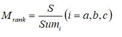
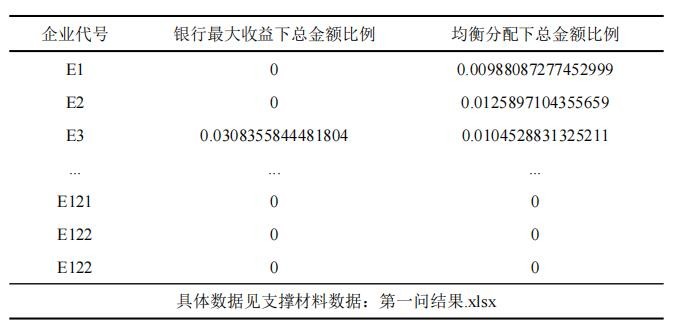

摘要
在实际中，银行通常依据中小微企业的实力、信誉对其信贷风险做出评估，然后依据信贷风险等因素来确定是否放贷及贷款额度、利率和期限等信贷策略。
为了量化信贷风险，给出合理的信贷策略，本文综合采用多种评价方法与模型进行分析
针对问题1，
为了对企业的信贷风险进行量化分析，综合考虑其两个影响因素：
企业实力和信誉对其进行评估，本文选取了客观赋权法：熵值法，
分别对企业的实力和信誉进行综合评价，最后通过权重计算得出信誉风险。
根据信贷风险，可以划分出梯度额度比例，同时，依据顾客流失率与利率的关系，
从银行利润最大化和金额分配均衡化两个角度，分别给出了合适的利率，
最终依据利率与贷款额度给出了具体的信贷策略
针对问题2，
由于附件中给出的是无信贷记录企业的数据，因此首先利用BP神经网络，根据进项发票信息和销项发票信息，将附件1的数据作为训练集，
预测出对应中小型企业的“信誉等级”和“是否违约”的结果。
此外，本题新增要求给出该银行在年度信贷总额为1亿元时对这些企业的信贷策略，
因此需要检查每家企业的金额是否在10万到100万之间，初次分配会有部分企业不符合约束条件，
本文利用贪心的思想，最大化影响利润，调整分配金额。其余类似第一问，即可得出信贷风险评分，确定信贷策略。
针对问题3，
在第一、二问基础之上，还要考虑突发因素的影响，对银行信贷策略进行调整。由于突发因素未知，因此可设为随机因子；
而后需要重新考虑实力、信誉与突发因素的影响权重。
本文采用层次分析法，将目标层设为最终的决策方案，考虑企业实力、信誉和突发因素的影响，合理确定这三者=个因素的标准权数，
利用权数求出各方案的优劣次序，最终确定调整方案。
关键词：熵值法、BP神经网络、层次分析法、贪心
一、问题重述
1.1 问题背景
在实际中，银行通常依据信贷政策、企业的交易票信息和上下游企业的影响力，
制定相应的定价策略。银行首先根据中小微企业的实力、信誉对其信贷风险做出评估，然后依据信贷风险等因素来确定是否放贷及贷款额度、利率和期限等信贷策略
1.2 问题重述
某银行对确定要放贷企业的贷款额度为10~100万元；年利率4%~15%为；贷款期限为1年
基于以上背景，团队需要根据附件给出的数据研究信贷策略，通过数学建模的方法解决以下问题：
问题一：
对附件1中123家企业的信贷风险进行量化分析，给出该银行在年度信贷总额固定时对这些企业的信贷策略
问题二：
在问题1的基础上，对附件2数据进行量化分析，并给出该银行在年度信贷总额为1亿元时对这些企业的信贷策略。
问题三：
综合考虑附件2中各企业的信贷风险和可能的突发因素对各企业的影响，并给出该银行在年度信贷总额为1亿元时的信贷调整策略。
二、问题分析
2.1 问题1的分析
问题一首先需要对企业的信贷风险进行量化分析，由于信贷风险可根据企业实力和信誉进行评估，因此可以通过熵值法分别对企业的实力和信誉进行综合评价，最后通过权重计算结合得出信誉风险。根据信贷风险，可以划分出梯度额度比例，同时，依据顾客流失率与利率的关系，可以综合考虑多方面找到最终合适的利率，最终依据利率与贷款额度给出具体的信贷策略。
2.2 问题2的分析
问题二基于问题一的有信贷记录企业的相关数据，给出了无信贷记录企业的数据，因此首先要对其进行分析。根据进项发票信息和销项发票信息，利用神经网络的方式，预测出对应中小型企业的“信誉等级”和“是否违约”，将第一问的相关数据作为训练对象，预测出新增的302家企业的结果，然后再用类似于问题一的方法，得出信贷风险评分。此外，
本题要求给出该银行在年度信贷总额为1亿元时对这些企业的信贷策略，因此需要检查每家企业的金额是否在10万到100万之间，调整分配金额，从而确定信贷策略。
2.3 问题3的分析
问题三不但要考虑前两问的影响因素，还要结合突发因素，对银行信贷策略进行调整。因此，需要重新考虑实力、信誉与突发因素的影响权重。本文采用层次分析法，将目标层设为最终的决策方案，考虑企业实力、信誉和突发因素的影响，确定各个量之间的相对重要程度，合理给出这三者的标准权数，利用权数求出各方案的优劣次序，最终确定调整方案。
三、模型假设
1.假设附件样本容量足够大，样本数据能够反映具体情况；
2.假设文中所引用的文献和结论均正确可靠；
3.假设放款后银行利率不会再改变；
4.假设其他影响信贷风险的因素占比可忽略。
四、定义与符号声明
符号 符号意义 Iamount 进项发票价税合计 Ivalue 进项负数发票金额 Oamount 销项负数发票价税合计 Oamount 销项发票金额 R 贷款年利率 Li 顾客流失率(i=a,b,c) Pi 不同信誉等级顾客所占比例(i=a,b,c) Beff 有效发票 Ball 全部发票 L 隐含层节点个数 N 输入层节点个数 M 输出层节点个数
五、模型的建立与求解
5.1 问题1模型的建立与求解
由于信贷风险可根据企业实力和信誉进行评估，因此可以通过熵值法分别对企业的实力和信誉进行综合评价，最后通过权重计算结合得出信誉风险。
根据信贷风险划分出的额度比例结合依据顾客流失率找出的利率，得出最后的信贷策略。
5.1.1 指标体系的建立
根据题目要求，银行首先根据中小微企业的实力、信誉对其信贷风险作出评估。结合附件中给出的数据，本文从实力和信誉两个方面选取计算了相关指标，如表5.1.1。
本文选取了利润与销售利润率作为企业实力的指标，通过进项发票与销项发票可计算得出；针对信誉方面，本文选取了信誉等级、是否违约以及发票状态作为指标，并首先对其进行量化处理。
对于信誉评级，A级设为4，B级设为3，C级设为2，D级设为1；
针对是否违约，“是”设为1，“否”设为0；针对发票有效率，“有效发票”设为1，“作废发票”设为0。
5.1.2 基于熵值法的信贷风险量化分析
利用Jupyter编写Python语句[1]对以上指标进行熵值法综合评价，分别得出实力和信誉的得分和排名后，依据权重最终量化各企业的信贷风险,其具体步骤如图。
（1）模型的建立
首先是对数据的标准化。各项指标的计量单位以及方向不统一的情况下，需要对对数据进行标准化处理，为了避免求熵值时对数无意义，为每个0值加上较小数量级的实数0.000001。
设选取n个指标，共有个m样本，则Xij 为第i个样本的第j个指标的数值(i=1,2...n;j=1,2...m)。
对于正向指标（信誉评级、进项发票有效率、销项发票有效率、销售利润率、利润）：
对于负向指标（是否违约）：
第二步，计算第j个指标下第i个样本所占比重，其中Pij 表示样本权重，计算公式如下：
第三步，计算第j个指标的熵值：
其中，ej 表示第j项指标的熵值，n为样本个数。
第四步，计算第j项指标的差异系数。某项指标的信息效用值取决于该指标的信息熵ej 与1之间的差值，它的值直接影响权重的大小。
信息效用值越大，对评价的重要性就越大，权重也就越大。即：
第五步，计算评价指标权重。
利用熵值法估算各指标的权重，其本质是利用该指标信息的差异系数来计算，其差异系数越高，对评价的重要性就越大（或称权重越大，对评价结果的贡献就越大），第j项指标的权重：
第六步，计算各样本综合得分Zi ：
第七步，用熵值法分别得出实力和信誉的得分和排名后，按照实力权重`w_p=0.6`、信誉权重`w_e=0.4`的比例算出综合评分`S=w_p*s_p+w_e*s_e`，
再根据每个企业的综合评分在相同信誉等级企业的综合评分的和中所占的比例得出所分得的金额比例Mrank 。

其中，`Sum_i`表示等级的综合评价分值的和。
（2）问题求解
首先对附件1数据中“信誉评级”和“是否违约”进行量化，并利用上文中公式求得进项发票和销项发票的有效发票率、销售利润率和净利润，而后对其进行标准化，部分结果如表
其计算出来的信息熵`e_j`，得出信息效用值d，如表5.1.3。
计算出指标权重，如表5.1.4所示
最后计算样本的评价得分值，并依据权重计算得出综合评分与排名以及额度比例，部分数据如表5.1.5。
5.1.3 信贷策略的提出
由于不同的信誉评级，当贷款年利率不同时，顾客的流失率也不同。
因此首先需要确定银行对每个信誉评级的全体用户的分配政策，再利用根据信贷风险评分得出的额度分配的比例求出每个企业所分得的金额。
设年利率为`R_i(i=1,2...29)`，年贷款的总额度为一个固定值S，银行收益为Pft。
由附件3可知，当信誉评级为D时，被认为企业信用极差，因此不予放贷。考虑到机器计算与实际情况，其中分配政策分为银行利润最大化政策和金额均衡分配政策。
（1）银行利润最大化
银行利润可由如下公式计算得出：
其中`i,j,k=1,2,3...29`。本文采用枚举法，通过枚举`i,j,k`，确定其对应的`(1-L_a)*R_i`，`(1-L_b)*R_j`和`(1-L_c)*R_k`的值。
若使银行的利润最大化，只需将所有金额分配给`(1-L_a)*R_i`，`(1-L_b)*R_j`和`(1-L_c)*R_k`中值最大的向所对应的信誉等级，而其余等级不与放贷。
通过Python的运行，枚举出银行利润理想最大值为`Pft=0.04152393775150505*S`，
即将全部金额分配给信誉等级为C的企业，收年利率为0.0585，其客户流失率为0.290189098264871。
（2）金额均衡分配化
由于将全部金额分给一个等级并不切合实际，且有一定的风险。因此，为了让各个信用评级的企业都得到信贷金额，
记每组i,j,k对应确定的`(1-L_a)*R_i`，`(1-L_b)*R_j`和`(1-L_c)*R_k`分别为`C_a`，`C_b`和`C-c`。
令`P_a=C_a/(C_a+C_b+C_c)`，`P_b=C_b/(C_a+C_b+C_c)`，`P_c=C_c/(C_a+C_b+C_c)`，按照公式计算出银行利润，取银行利润最大的一组。
通过Python的运行，求出在所有信誉等级均可得到贷款金额的情况下，银行的利润`Pft=0.04083862302221721*S`，各个信誉评级的用户的利率如表
（3）两方案的最终信贷政策
有以上可得不同信誉等级的贷款年利率，再利用前文所计算的信贷风险评分得出的额度分配的比例求出每个企业所分得的金额，部分金额如表

5.2 问题2模型的建立与求解
问题2要求在问题1的基础上，针对无信贷记录企业的数据，因此可以根据进项发票信息和销项发票信息，利用BP神经网络预测出对应中小型企业的“信誉等级”和“是否违约”。
然后里用问题一的方法，得出信贷风险评分。此外本题要求给出该银行在年度信贷总额为1亿元时对这些企业的信贷策略，因此需要在第一问的基础上加以年度信贷总额为1亿元的限制，从而确定信贷策略。
5.2.1 BP神经网络模型的选择与建立 （1）选择 BP 神经网络模型的原因
BP 神经网络算法是模拟人类神经结构的一个机器学习算法。由于BP神经网络能够通过神经元之间的连接自动学习输入数据的内在规律，其实质是从输入经过非线性映射到达输出的问题，具有强大的自学习能力。
本题我们根据神经网络模型的基本原理预测出企业的信誉等级和是否违约，从而进一步用类似于问题一的方法解决信贷策略问题。
（2）设计 BP 神经网络学习模型
BP 神经网络房价预测模型设置了一个经典的包含输入层，输出层，隐藏层的三层神经网络。
1、输入层输出层：因为需要预测企业是否会违约和信誉等级，本题采用发票状态作为输入层，附件一中的结果输入进行训练。
2、隐含层数：隐藏层数的增加，使准确度升高，错误变少。但隐藏层层数过多，也会产生很多不可避免的弊端。隐藏层层数过多，会导致需要很长的网络训练时间，也可能造成过分拟合，严重依赖波士顿数据集本身的现象。
因此本题采用两层隐藏层。
3、隐藏层节点数：隐藏层节点数目过多，会导致网络学习结构变得十分复杂，学习速率大大降低，而且会导致在训练学习过程中产生局部极小化问题。如果隐藏层节点数目过少，也会造成许多的负面影响，譬如设置过于简单，不具备良好的学习能力和信息处理能力。
本题在输入层位两个结点，输出层一个结点，同时确定了隐含层数为二的情况下，我们选择第一层四个结点，第二层三个结点的结构。
隐藏层节点数的确定方法有很多，目前仍然没有一个普遍适用的公认的确定方法。本题依据的是两个经验公式：
由于输入层有2个节点，输出层为1层，所以结合①②两个公式，采用两层隐藏层，第一层节点数为4个，第二次节点数为6个，如图5.2.1所示。
（3）设计 BP 神经网络预测模型
BP神经网络算法本质包含两个阶段，分别是输入数据的正向传播和误差反馈反向传播两个阶段。信号正向传播。
输入信息通过输入层、隐藏层处理并计算每个神经单元的输出。
即根据输入已知的样本值，计算当前参数对应的神经网络模型的输出。
输入数据通过隐藏层节点处理后，发往输出层，将该数据与输出层预期数据作对比，
如果没有达到预期，则开始进行误差反馈反向传播阶段，将误差逆返回到隐藏层，
再由隐藏层进行向输入层进行返回，分配给输入层各层的所有单元。
所以输入层的每个单元都获得了误差反馈，从而对于个单位数据的修改供依据。
如此两大传播阶段来回反复地进行，直至达到误差符合期望为止。
实现过程流程图如图所示：
假设输入输出神经元为(N,M)，Wij 表示该BP神经网络的输入层的第i个神经元与隐藏层的第j个神经元之间的连接权值,
使用Wjk 表示该BP神经网络的隐藏层中第j个神经元与输出层中的第k个神经元之间的连接权值。
使用aj 表示该BP神经网络隐藏层的第j个神经元的阈值，使用b表示该神经网络输出层的第k个神经元的阈值。
则，隐藏层计算输出为：
其中，Hj 为隐藏层输出，f为激励函数。激励函数为
输出层计算输出如下，其中k=1,2,3..M，Pk 为输出层输出
根据已经得到的输出神经元和输出层输出，得到误差输出为：
其中，k=1,2,3...M，ek 为误差，Mk 为已知的期望值。
然后，根据误差反向传播更新连接权值Wij 和Wjk
而后，根据误差反向传播更新阈值aj 和bk ，其中j=1,2,3...L,k=1,2,3...M：
5.2.2 信贷策略的提出
根据题目要求，银行对确定要放贷企业的贷款额度为10~100万元，同时，该银行的年度信贷总额为1亿。显然，放贷总额为1亿，银行的收益最大；而问题1中只给某一信誉等级的企业所以额度是不可取。
因此，只能采取金额分配均衡化策略，首先对各信誉等级进行梯度比例的划分。
但是，完全按照评分进行比例划分，会导致部分企业额度超出100万。所以，为了使银行的收益尽量大，把所有企业超出100万的部分分配给其他企业，企业排序的优先级为收益，其次为综合评分，
首先把优先级高的企业的金额补全100万，并从超出金额中扣除，再依次把剩余的金额分配给优先级低的企业，直到分完为止。若存在企业分得金额不为0且小于10万，则从优先级比该企业低的企业中依次分出金额，补满10万，若该企业的优先级最低，则将该企业的金额依次分配给优先级高的企业。
5.2.3 模型的求解
根据以上的问题分析与模型建立，进行BP神经网络的模型求解。首先运行两次神经网络，分别对“信誉评级”和“是否违约”做出预测。神经网络前50轮训练的损失值变化如图。
最终，通过BP神经网络预测出新增的302家企业的“信誉等级”和“是否违约”的结果如下表：
经过BP神经网络预测出“信誉等级”和“是否违约”后，即可按照第一问的思路，求出企业的信誉得分与实力得分，最终计算出综合评分与排名，如表
利用问题一的熵值法和信贷策略求出各企业在两种策略下分得的金额，并检查是否都满足贷款额度为10~100万元的约束条件。
显然银行利润最大化的方案不可行，把所有金额都分给一个信誉评价的企业，会导致金额超出上限，因此采用均衡分配的方案。但此方案的运行结果中，有一家企业的金额为1480898.6659650055元，超出100万元，因此，将超出部分按照前文所述的收益最大化的原则分配，同样，信誉等级为D的不予放贷。最终结果如下表：
1.1 问题背景
1.1 问题背景
1.1 问题背景
1.1 问题背景
1.1 问题背景